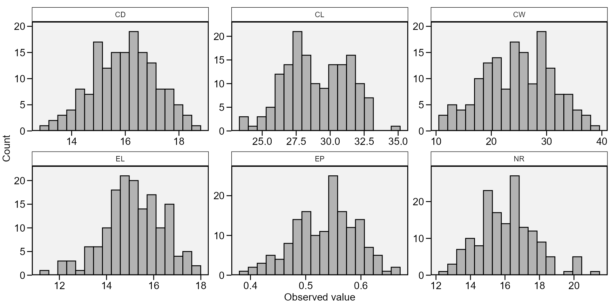

vignettes/vignettes_descriptive.Rmd
vignettes_descriptive.Rmdmetan provides a simple and intuitive pipe-friendly framework for performing descriptive statistics. A set of functions can be used to compute the most used descriptive statistics quickly. In this tutorial, we will use the data example data_ge2 as motivation examples.
Let’s start with a very simple (but widely used) example: to compute the mean of a numeric variable (say, PH) from a data set (data_ge2). Using the R base functions stats::mean(), the solution would look like to:
mean(data_ge2$PH) # [1] 2.484813
Consider that now we want to compute the mean value of PH for each level of the factor GEN. In other words, to compute the mean value of PH for each genotype. The solution using stats::aggregate() is then:
Using the metan’s function means_by() the amount of code needed is dramatically reduced. To compute the grand mean for all numeric variables of data_ge, we simple use:
ov_mean <- means_by(data_ge2) print_table(ov_mean)
To compute the mean values for each level of the factor GEN, we then need to add the grouping variable GEN in the argument ....
ov_mean2 <- means_by(data_ge2, GEN) print_table(ov_mean2)
The following _by() functions are available for computing the main descriptive statistics by levels of a factor.
cv_by() For computing coefficient of variation.max_by() For computing maximum values.means_by() For computing arithmetic means.min_by() For computing minimum values.n_by() For getting the length.sd_by() For computing sample standard deviation.sem_by() For computing standard error of the mean .Other useful functions are also implemented. All of them works naturally with %>%, handle grouped data with dplyr::group_by() and multiple variables (all numeric variables from .data by default).
av_dev() computes the average absolute deviation.ci_mean() computes the confidence interval for the mean.cv() computes the coefficient of variation.freq_table() Computes frequency fable.hm_mean(), gm_mean() computes the harmonic and geometric means, respectively. The harmonic mean is the reciprocal of the arithmetic mean of the reciprocals. The geometric mean is the nth root of n products.kurt() computes the kurtosis like used in SAS and SPSS.range_data() Computes the range of the values.sd_amo(), sd_pop() Computes sample and populational standard deviation, respectively.sem() computes the standard error of the mean.skew() computes the skewness like used in SAS and SPSS.sum_dev() computes the sum of the absolute deviations.sum_sq_dev() computes the sum of the squared deviations.var_amo(), var_pop() computes sample and populational variance.valid_n() Return the valid (not NA) length of a data.Let’s show some examples. Note that select helpers can be used to select variables based on their names.
# Standard error of the mean for numeric variables that contains (ED) data_ge2 %>% sem(contains("ED")) %>% print_table()
# Confidence interval 0.95 for the mean # Variables with name width greater than 3 characters # Grouped by levels of ENV data_ge2 %>% group_by(ENV) %>% ci_mean(width_greater_than(3)) %>% print_table()
desc_stat()
To compute all statistics at once we can use desc_stat(). This is a wrapper function around the above ones and may be used to compute measures of central tendency, position, and dispersion. By default (stats = "main"), seven statistics (coefficient of variation, maximum, mean, median, minimum, sample standard deviation, standard error and confidence interval of the mean) are computed. Other allowed values are "all" to show all the statistics, "robust" to show robust statistics, "quantile" to show quantile statistics, or chose one (or more) statistics using a comma-separated vector with the statistic names, e.g., stats = c("mean, cv"). We can also use hist = TRUE to create a histogram for each variable. Here, select helpers can also be used in the argument ....
all <- desc_stat(data_ge2, stats = "all") print_table(all)
quantile <- data_ge2 %>% desc_stat(PH, EH, CD, ED, stats = "quantile") print_table(quantile)
stat_vars <- data_ge2 %>% desc_stat(EP, EL, CL, CD, CW, NR, hist = TRUE)

print_table(stat_vars)
To compute the statistics for each level of a factor, use the argument by. In addition, it is possible to select the statistics to compute using the argument stats, that is a single statistic name, e.g., "mean", or a a comma-separated vector of names with " at the beginning and end of vector only. Note that the statistic names ARE NOTE case sensitive, i.e., both "mean", "Mean", or "MEAN" are recognized. Comma or spaces can be used to separate the statistics’ names.
stats = c("mean, se, cv, max, min")stats = c("mean se cv max min")stats = c("MEAN, Se, CV max Min")stats_c <- desc_stat(data_ge2, contains("C"), stats = ("mean, se, cv, max, min"), by = ENV) print_table(stats_c)
We may convert the results above into a wider format by using the function desc_wider()
desc_wider(stats_c, mean) %>% print_table()
To compute the descriptive statistics by more than one grouping variable, we need to pass a grouped data to the argument .data with the function group_by(). Let’s compute the mean, the standard error of the mean and the sample size for the variables EP and EL for all combinations of the factors ENV and GEN.
stats_grp <- data_ge2 %>% group_by(ENV, GEN) %>% desc_stat(EP, EL, stats = c("mean, se, n")) print_table(stats_grp)
Rendering engine
This vignette was built with pkgdown. All tables were produced with the package DT using the following function.
library(DT) # Used to make the tables # Function to make HTML tables print_table <- function(table, rownames = FALSE, digits = 3, ...){ df <- datatable(table, rownames = rownames, extensions = 'Buttons', options = list(scrollX = TRUE, dom = '<<t>Bp>', buttons = c('copy', 'excel', 'pdf', 'print')), ...) num_cols <- c(as.numeric(which(sapply(table, class) == "numeric"))) if(length(num_cols) > 0){ formatSignif(df, columns = num_cols, digits = digits) } else{ df } }